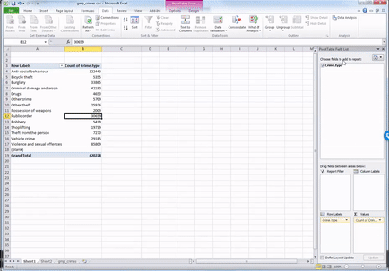
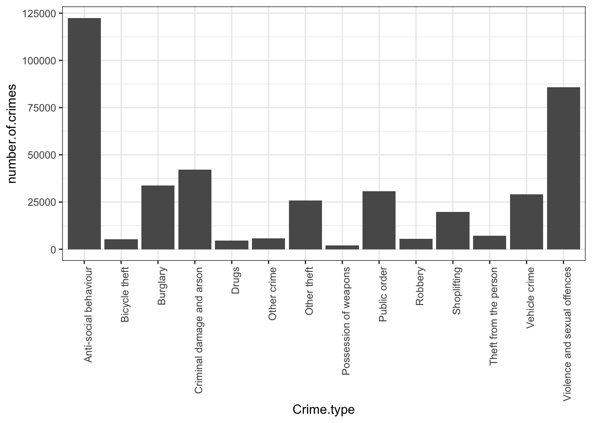
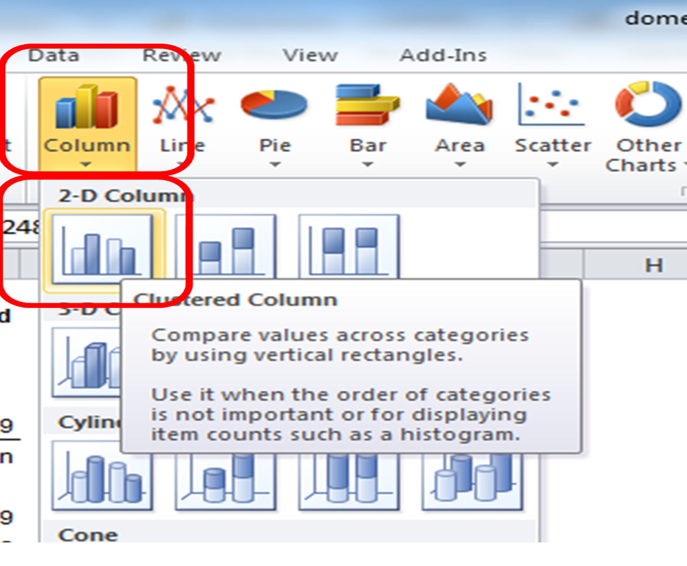
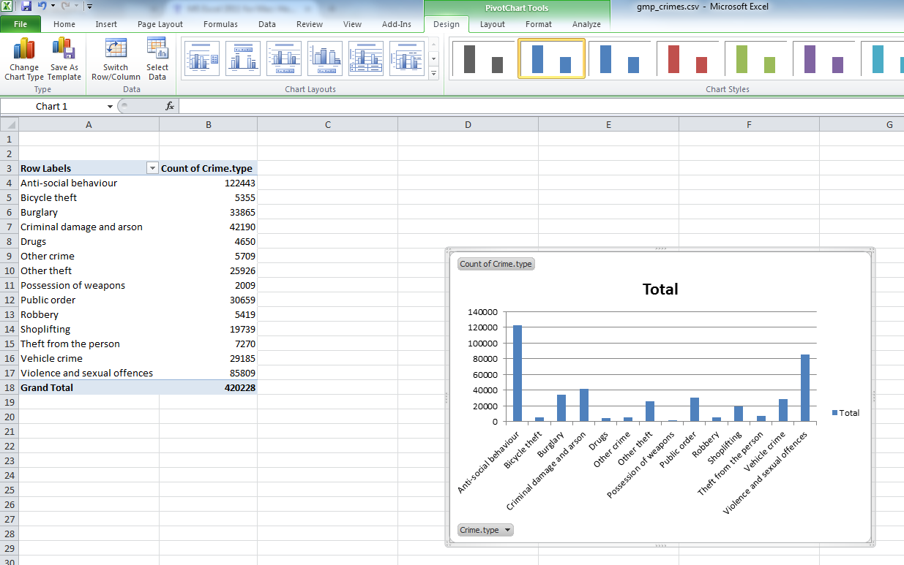
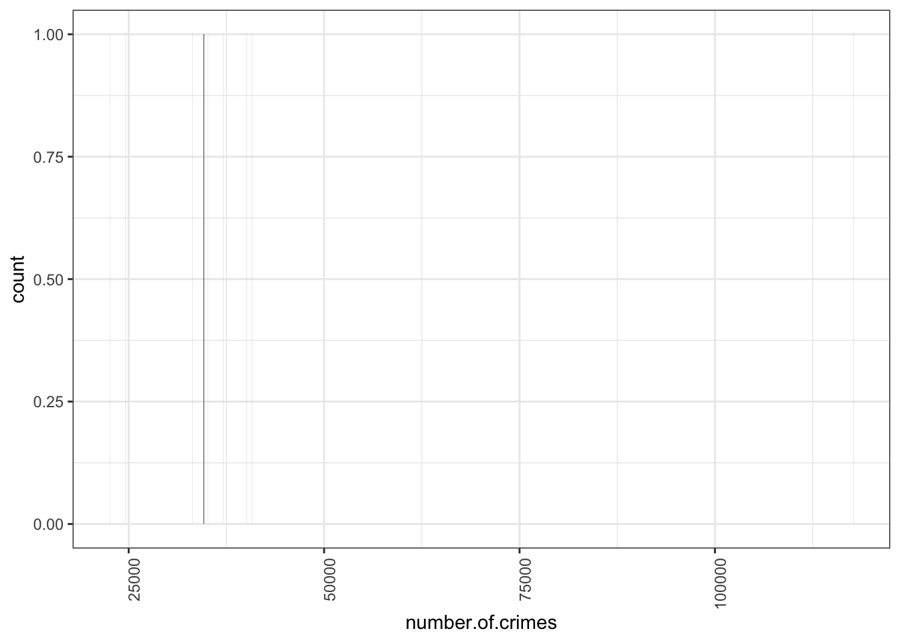

Chapter 2 Week 2
2.1 Learning outcomes
Today we are going to start summarising our variables in our data, in order to be able to start talking about them in a meaningful way, and begin to be able to tell a story with our data. Consider this parliament research briefing on UK prison population statistics. It looks at the number and make up of people in prison in the UK. To do this, it utilises data about people in prison, which you can imagine based on our experience with data last week as a spreadsheet with each individual row representing one individual prisoner. You can also imagine some columns that contain values that correspond to each prisoner, representing a set of variables recorded about him or her. But it would not be very informative to just print out this spreadsheet and hand it to you - or definitely not to hand it to policy makers who are busy, and most likely looking for a summary of headline figures, rather than rows and rows of data. If you did click on the link, you can see that it instead summarises the data in a way that people can read through, and draw meaningful conclusions from.
By reading this report, you can come to know that, at 31st March 2017, the total prison population in England and Wales was just over 85,500. But going further, one of the variables in the data set is the person’s gender. If we want to talk about this one variable - gender - in this data set - prison population - we can turn to univariate analysis of this variable. For example, we could count the number of men versus the number of women in prison. What do you think this will tell us? Do you think there will be equal number of men and women? If you’ve been paying attention in some of your other courses, you’ll likely suspect that there are some gender differences in the prison population. So if it’s not 50-50 men and women in prisons, then what do you think the split is like? Do you think it’s 60-40? 70-30? 80-20?
Come on, take a guess, I’ll hold off telling you. Speak to someone next to you. Discuss why you think it’s the split that you think it is. I’ll wait here.

Ready? OK I can tell you now. Actually, according to the count of prison population in September 2017, the number of men in prison in England and Wales is 82,312, while the number of women is 3,982 making the split about 95-5 (see for yourself here). Are you surprised? I definitely was! I had no idea the difference was this large! You can often gain valuable insight into topics that you are interested in by looking into one variable - that is performing univariate analysis on your data. And this is what we will learn to do today. Excited? Yaaay
2.1.1 Terms for today:
- Univariate analysis
- Frequency
- Bar charts
- Measures of central tendency
- Histograms
- Distributions
- Measures of variance
2.2 Univariate analysis
So you want to analyse your variable. As you have likely pieced together by now, that univariate analysis simply just means - the analysis of one variable. I am giving you a sneek peak into next week’s session now by telling you that bivariate analysis means that you are looking into the relationship between two variables…! And just you wait until we get to multivariate analysis which is the analysis of the relatioship between more than two variables!!!
So just remember - uni = one, bi = two, and multi = many. That’s it, no need to count past two. We data analysts are very lazy people, you will begin to figure this out as we go.
Right, now that we are confident with out terminology, let’s think about what we can do, in order to carry out some univariate analysis. As mentioned, univariate analysis is the analysis of one variable. So we know that we want to be able to talk about one variable in our data set. For this we will need to select a variable we want to talk about. Often this will depend on the question being asked. So for example, if someone asked you the question “How many more men than women are in prison currently in England and Wales?” you can begin to think about the variable you will have to analyse - perhaps the variable of gender. But once you’ve picked your variable, how do you analyse it? That is what today will be about.
2.2.1 The importance of level of measurement
Well remember when we spoke about levels of measurement last week? We encountered it in the lab exercise, in the reading, and in the quiz as well. In case you need a refresher, it was the time when we looked at the different variables in terms of whether they were nominal, ordinal, or numeric. If it still doesn’t ring a bell, go back to last week’s lab and ctrl + f for these terms. But hopefully you will have retained some of this. Remember we can differentiate between numeric and categorical, and then categorical we can futher sub-divide into nominal and ordinal. Here’s a beautiful and scientific drawing to illustrate:

So why is this important? Well what level of measurement your variable falls into dictates what types of summaries are appropriate. Thinking back to the gender example, it would not make huge amount of sense to calculate the “average gender”, would it? Gender is a nominal variable, and as so an appropriate way to summarise it is not to calculate an average (mean or median, but we will get into this a bit later). Instead there are other approaches you could take. For example you could look into the modal category - which value of the variable occurs the most frequently? For example, in the prison population data above, the modal category for gender was male, as this was the most frequently occuring value for this variable. It occurred exacly 82,312 times, since there were 82,312 men in the data set. The ‘female’ value for the gender variable only appeared 3,982 times, since that is how many women were observed. How do we find this out? Well in the simplest term we could count all the occurrences of each value in the data set. But remember what I said about analysts being lazy? We don’t want to be going throgh spreadsheets line by line. Instead, we would look at the frequency of all the values the variable can take, in this case the frequency of the male and female values for gender. We could do this by something called a frequency table. Frequency tables are valid ways for summarising categorical variables, however they might not be appropriate for numeric variables, which are better suited to measures like average and variance. But now I’m just throwing words around.

Hopefully these words sound familiar from your reading. But it might be that their meanings are not entirely clear just yet. That’s fine. Let’s do some exercises, and demistify these, so that we can get on to telling some interesting stories with our data!
2.3 Summarising categorical data
2.3.1 Activity 1: Crime types
Let’s start with some exercises in talking about categorical variables. We will do this by looking at crime data from 2016-2017 recorded by Greater Manchester Police, available for download from the police.uk website. You don’t have to go download this yourself though, because I have put the data on blackboard for you. So just go to blackboard, and the course content, and then downlod the file gmp_crimes.csv into your working directory. Once you have saved it, open the file using excel.
It should open up like this, with your variable names as column headers:

Under the column headers you have your 420228 rows, one for each of the 420228 crimes in your data. Recall that these are your observarions. Also, that therefore your unit of analysis in this data at this moment is each individual crime.
Anyway let’s say we want to talk about your variables. Like let’s say that you want to talk about the variable crime type.
What level of measurement does this variable have? Is it a category? (hint: yes, it’s in the ‘Summarising categorical data’ section, that sort of gives it away…) Does it have a meaningful order? Now this one is one to think about! What do you think? Is crime type nominal or ordinal variable? Do you think it has a meningful order? Take a moment to think about which one you think it is, and most importantly why you think this is the case. Turn to a friend, tell them which one you think it is and also why you think this. Then ask them what they think, as well as their reasoning behind this. Here’s a gif to separate the answer, so you don’t ruin the surprise before you have a chance to discuss.

So did you decide that crime type is a nominal variable? If you did nice work! Indeed it would be very hard to find a meaningful order for the categories in there. You could order alphabetically, but remember that is not meaningful. You cannot agree what comes first in the same way that you would be able to for a scale of strongly disagree to strongly agree. Therefore it is nominal. This part also does matter, but we will return to why later.
2.3.2 Frequency tables
Okay so for now we want to find out about this variable. We know it’s a categorical variable, so if you’ve done your reading you will now know that you want to be looking at a frequency table to describe it. A frequency table will tell you the number of times that each value that the variable can take appears in your data. In other words, the frequency! Since each row is a crime incident, every time a particular value appears in your data, it means that a crime that belongs to that crime category occurred.
Here’s an example of a frequency table. Let’s say we have this data set of waiters and waitresses who work at Lil’ Bits restaurant. Here is our data in table format:

You can see here again that every row represents one waiter or waitress. I’ve even put in a little picture of each of them, to make it more personal. You can see them all now, forming rows of your data. You can also see one column, for the one variable here, which is gender. For each person we only recorded their gender, because for now, that’s all we are intersted in. We want to look at the gender of waiters and waitresses at Lil’ Bits. Maybe we think that the manager is sexist and hires only females. Maybe we want to work out the likelihood of having a male waiter. Whatever our motivation, we just want to know!!! We want to know the number of men, and the number of women who work there. And it really is as simple as that - all we do is count the occurrence of each value of the variable, and then summarise that count in a table. In this case, we could the number of times that we record ‘female’ value for the gender variable, and then the number of crimes that we record ‘male’ value for the gender variable, and then we say that there are 3 females and 2 males in our data. That’s it. That’s a frequency table! You build it by simply counting the number of times each value is present in the data frame. Because if each row is an observation, then every time you see ‘female’ in the gender column accounts for one observation of this value - one female waitress.
I’ve even made a gif to illustrate the process, something like this:

I hope that illustrates the concept of what a frequency table is. It should be very easy for you to manually count the number of men and women working at the Lil Bits restaurant, as they only have 5 front of house staff apparently, making this a data set of 5 rows. However in real life you are unlikely to want to manually count each occurrence of each value the variable can take in your data. It definitely would not be a fun activity with the 420228 rows in your GMP crimes data.
Luckily excel makes this much easier for us.
2.3.3 Creating a frequency table in Excel
Making a frequency table in excel is quite simple, and it is achieved by using something called a pivot table. As far as I know this name is specific to Excel. If you apply to public sector jobs, especially where excel is a requirement, the word pivot table is likely to come up in interview. It’s a handy tool for summarising categorical data. A pivot table is a tool that lets you build different types of summary tables from your data. One of these is a frequency table.
PivotTables are a great way to summarize, analyze, explore, and present your data, and you can create them with just a few clicks. PivotTables are highly flexible and can be quickly adjusted depending on how you need to display your results.
If you want to go a bit further in the pivot table knowledge, here’s a handy list of 23 things you should know about pivot tables. I like it because it’s a list, and Buzzfeed has taught me that all information is best presented in list format, preferably with a random number of items in the list, like 23. We’ll cover most of these items during the upcoming weeks.
2.3.4 Activity 2: Looking at frequency
So for now, we will now use a pivot table to create a frequency table of the crime type variable in the GMP crimes data. To do this, go to your gmp_crimes data set, opened up in Excel. Download the data from BB, as we did last week. If it’s not downloading for any reason stick up your hand, we can come around and trouble shoot this for you! Now once you have the data open in Excel, you can easily create a frequency table following the below steps:
First you will have to select the pivot tabel option. Click into the Insert tab, click on pivot table and then again on pivot table:

This will open a popup window, where you want to make sure that you select ‘New worksheet’ where it asks where your pivot table should be placed, and then click OK:

Don’t worry too much about the top option where you select your data, because the pivot table will let you select your variables retrospectively. But just make sure the ‘Select table or range’ option is selected, and not the ‘use external data source one’.
Now when you click OK, excel should take you to the new worksheet where it has set up a pivot table for you, ready to get into your data.
It might also open a toolbar on the side, but it might not do this automatically. In any case, if the toolbar ever disappears, to summon it you have to do one simple step, which is to click anywhere inside the pivot tabe area:

Once you do that, a navigation pane should appear. Just like this:

Now you should see all your variables on the side there as well, in this little panel that has just appeared.
You can scroll through and find crime type. This is the variable we want to look at in this case.
You can see four windows within the pivot table panel. You’ve got Filters, Columns, Rows, and Values. You can drag your variables into these boxes in order to create a table. Whatever you drag into the Columns box becomes the columns, and whatever you drag into the Rows box becomes the Rows. Try it out, drag Crime type into the Rows box. You should see a list of all the possible values that the crime type variable can take in the rows. Now drag it over to columns box, and you’ll see it across there. Drag it back to rows and leave it there:

While you see the list of possible crime types, there is no value next to it - it is not yet a frequency table. This is where you need the Values box on the pivot table toolbar. What you drag into there determines what values will be displayed. So now grab the “Crime type” label from the top again, and drag down, this time to the values box, like this:

Now you will see that a new column appeared with the frequency values, letting you know the number of occurrences of each value. Or in other words - the number of crimes for each crime type in the yeat May 2016 - May 2017 in GMP region. Cool, no? Have a look at the resulting table. Which crime type is the most frequent? Which one is the least? Is this in line with what you were expecting?
We can see that the most frequent crime type in the data set is ‘Anti-social behaviour’. This makes anti-social behaviour the modal category. The mode is the most frequent score in our data set. It is possible for there to be more than one mode for the same distribution of data, (bi-modal, or multi-modal). It would be possible that there were the same number of crimes recorded in two crime type categories. But in this case, anti-social behaviour is the mode. It is the most frequently appearing value for the crime type variable. It is the most frequently occuring crime type.
But how much of all crimes does ‘Anti-social behaviour’ account for? When we are talking about your variables, we normally want to give detail and context, so that we tell a comprehensive, and easy to understand story with our data. We can at this stage say that the most frequently occurring crime type (the mode) is anti-social behaviour, with 122,443 incidents recorded by GMP. But how much is that? Well we can introduce another column to our pivot table, that tells us more about the proportion of all crimes that each crime type accounts for.
To do this, drag from the top, the variable Crime Type into the values box once more:

You will see a third column appear, identical to the second one, with the frequencies. To turn this into percent values, click on the little downwards arrow on the yellow box of the value you just dragged into the values box:

When you click on that downwards arrow a menu will appear.
Click on the “Value Field Settings…” option, to open up a new menu window, where you can select what you want the column to display.

You can pick any of these, and it will turn your column of counts (you can see that the default is set to Count) to whatever it is that you selected. In this case, since we had a frequency table we are looking at the count of each one so leave this as it is. Instead click on the tab “Show Values As”.
Then click on the dropdown menu (initially it will say ‘No Calculation’). Again you will see a variety of possible options to choose. Here we want to select “% of Grand Total”. Don’t worry about the other options for now, we will address those next week, when we make frequency tables with two variables. You can also rename the column using the ‘Custom Name’ Field. Here I change the name from ‘Count of Crime.type2’ to ‘% of all crimes’. As we discussed last week, it’s always better to have descriptive and meaningful variable names.
Then you click OK, and ta-daa a table appears, which tells you not only that the most frequently occurring crime type (the mode) is anti-social behaviour, with 122,443 incidents recorded by GMP, but also that this accounts for 29% of all crimes recorded in this time period.
Interesting, no? Sometimes proportions can put things into perspective. So for example, if we look at total crime, we might imagine that it’s a larger number than we had thought, and feel worried that perhaps there is more crime in Greater Manchester than we’d anticipated. However, if you have a look into what these crimes are, this may help interpret the data. Robbery for example can be a very traumatic event, and is one that makes people most fearful of crime. However you can see that volume-wise, it makes up just over 1 per cent of all crimes. So if robbery is what we are particularly concerned about, we can rest assured that this is not a frequent crime, all things considered.
Does the frequency of any of these crime types surprise you? Is this what you expected? When we speak about recorded crime in such general terms, you have to consider that all these very diverse crime types are included in such an umbrella term. So if you begin to hear about an increase in crime, surely you should begin asking - increase in which crimes? An increase in burglaries is a very different thing from an increase in robberies, no? They would require different responses from the police for example, and have different effect on people’s experiences of victimisation and fear of crime. Depending on which one is driving the increase would dictate whether we need more on-street foot patrols in robbery hotspots, or whether we need better burglar alarms. Therefore looking into the types of crime, and their frequencies, can lead to some very useful insight indeed.
2.3.5 Visualising a frequency table with bar charts
Bar charts are a simple way of visually presenting a frequency table. You will have definitely seen bar charts before. We will talk more about visualisation best practice in later weeks, but for now, have a quick glance at this article.
In any case, bar charts represent your data by creating a bar for every category, and then varying the height of this bar to represent the frequency. Imagine our frequency table turned on its side!
Now imagine that the number of crimes was represented by a bar with a height that corresponds to the value in each cell. That is a bar chart.
So in this case, a bar chart would look something like this:

I hope that you can see the resemblance between the table on its side and the bar chart now! If unclear call us over, we’ll explain! While it’s easy to just move on the next step and insert a bar chart, it’s important that you know what you are representing with it!
2.3.6 Activity 3: Bar charts in Excel
OK so let’s make our own bar chart in Excel. Go back to your pivot table, that has the frequency of each crime type. Click anywhere in the table, to highlight it all. However you might not want all the values. You can see that on the last row we have a total column. If we’re comparing the crime types against each other it might not make sense to also include a bar for the total. So you might want to highlight everything except the total bar:
When the whole pivot table is highlighted, click on the charts tab on the top menu if you are using a mac:

Or the “Insert” tab on a PC:
Once you click on that you will see a whole menu of possible charts appear. Click on the one that says ‘Column’. More options will appear. Choose ‘Clustered Column’.
On mac:

On PC:

And that’s it! Once you click on that, a chart will appear! Yay!

Now you can stylize your graph. First, you might want to arrange crime type in an order from most to least frequent, rather than alphabetical order. To do this, you must sort the data in the table.
Highlight the values in the total column, and click the data tab. Click the little arrow next to the sort icon, and choose descending.

Note, depending on the version of excel you have and if you use PC or Mac, it may say “smallest to largest” instead of ascending and “largest to smallest” instead of descending - but these mean the same thing!
You can also stylize your graph, to make it look the way you like. As I mentioned, we will go through some theory behind data visualisation, but if you want to spend some time making your graphs nice now, then below are some links you might find helpful:
2.4 Summarising numeric data
So we saw that for categorical data the way we would carry out univariate analysis is to produce a frequency table, identify the modal category (the most frequent one), and we can visualise this with a bar graph. Nice. But what about numeric variables? I’ve thrown some words around, like average (mean) and median. Also spoke about the variation. In this section we will consider these numeric summaries for numeric variables, and also consider how we can go about visualising these as well.
But first, to get some numeric data to summarise, let’s make another pivot table, to create a new data set, that tells me the number of crimes per borough. To do this, let’s create a new frequency table in excel, this time using the ‘borough’ variable. I will leave you on your own to do this. You can refer back up to the steps above which we followed to create the crime type frequency table. But instead of crime type, this time you want to count the frequency of crimes per borough. So in the end you should end up with a table where there are two columns, one for ‘borough’ and one for ‘number of crimes’.
Note that the column with the number of crimes in it might initially be labelled by your pivot table as something else, for example, it could be labelled as count of borough (as it counts the occurrence of each borough, and might not automatically realise that each row/ observation is one crime). So feel free to rename this column, by simply clicking in the cell, and writing “number of crimes”.
In this case, each row will be one borough. Your table will look like this:
| borough | number.of.crimes |
|---|---|
| Manchester | 117663 |
| Wigan | 40751 |
| Bolton | 40058 |
| Oldham | 37073 |
| Stockport | 35122 |
| Rochdale | 34619 |
| Tameside | 34506 |
| Salford | 33115 |
| Bury | 24588 |
| Trafford | 22587 |
If you consider this frequency table your new data, you can see that you have two columns, which means two variables. You have one variabe for the name of each borough. And you have another one, that is the number of crimes. While the borough name is a nominal variable, the number of crimes is…
…
…
…
… numeric! Yay!
So how do we talk about a numeric variable. You can imagine why a frequency table doesn’t quite make sense. A numeric variable can take any form between two limits, the minimum value and the maximum value. Because they don’t map neatly into a few categories like categorical variables, it is likely that most of them would have a frequency value of 1. And that is not very interesting.
Dont believe me? You can give it a try. Make a frequency table of a numeric variable, and nothing exciting will happen. See:
| number.of.crimes | frequency |
|---|---|
| 22587 | 1 |
| 24588 | 1 |
| 33115 | 1 |
| 34506 | 1 |
| 34619 | 1 |
| 35122 | 1 |
| 37073 | 1 |
| 40058 | 1 |
| 40751 | 1 |
| 117663 | 1 |
The frequency of each number of crimes is one. It is unlikely that two boroughs will have exactly the same number of crimes. So it doesn’t make sense to think about numeric variables this way.
Important note If you are not sure why this is the case, or if anything about the above is confusing, raise your hand now. Ask us to explain this. It’s not as complicated as it might sound at first, but it’s important that you understand what happens.
Right, so what’s a better way to summarise numeric data? It is easier to summarise them by looking at their measures of central tendencies. This is what we’ll get into in the next section.
2.4.1 Measures of central tendency
You will often hear numeric variables summarised by the measure of central tendency. These are the mean and the median. You will have encountered the mean before, but possible referred to as the average. In statistical language you will hear people talk about the mean number of crimes per borough is 42008.2 crimes. This is the exact same thing as talking about the average number of crimes per borough is 42008.2 crimes. And you would calculate it the same exact same way.
To calculate the mean, you add up all your observations, and then divide by the number of observations that you have.
So let’s do this for our number of crimes per borough. We have 10 boroughs in total. You know this because you see that there are 10 rows. Or you might just know that Greater Manchester is made up of 10 metropolitan boroughs. In any case, you know that there are a total of 10 observations. You can denote the number of observations with n. So in this case, we know that n=10.
What is the total number of crimes? Well it’s the sum of the number.of.crimes column. The total number of crimes is the sum of the crimes for each borough. In this case, the total number is:
22587 + 24588 + 33115 + 34506 + 34619 + 35122 + 37073 + 40058 + 40751 + 117663
This number incidentally is 420082. So how do we get the mean? As I said above, and as your readings mention, you take the sum of all the values, and you divide by the number of observations.
You can say:
sum(values)/n
or in this case
(22587 + 24588 + 33115 + 34506 + 34619 + 35122 + 37073 + 40058 + 40751 + 117663)/10
which is
420082/10
which is
42008.2.
So what is the mean number of crimes per borough? You guessed it, the mean number of crimes per borough is 42,008.2. That means that on average, there are about 42,000 crimes per borough. And this measure is the mean.
Is this a good way of describing your data? Well one way to think about it is to consider how much you distort the data if you use that measurement to talk about it. Normally when we think about average, we think that this is a measure that represents a value somewhere in the middle. But if we look at this value, 42,008.2, we see that actually this number is higher than almost all the boroughs. There is only one borough with a number of crimes that is higher than the average. All the other boroughs have below average crime rates. Why do you think this is?
If you have done your readings, then you will know that this is caused by something called an outlier. An outlier is an observation that lies an abnormal distance from other values in a random sample from a population. In a sense, this definition leaves it up to the analyst (or a consensus process) to decide what will be considered abnormal. In the most basic sense, an outlier can be an abnormally high or abnormally low number of crimes per borough, when you compare it to the other boroughs. In this case, we can see that Manchester borough has far more crimes than any borough, with 117663 crimes. This can be considered an outlier. We will talk more later about how you can determine whether you have outliers in your data.
But take a moment here to think about why Manchester borough might be such an outlier. It might help to look at where it is on a map, and what sorts of areas fall within this borough, comparet with some of the other ones, such as Trafford for example, which has the lowest number of crimes.

Any thoughts? Turn to the person next to you and have a chat about why you think that we are seeing such a large number of crimes in this borough compared to the other ones.
Now that you’ve had this discussion, let’s get back to the problem at hand. One of the issues with outliers is that they can skew your results. In this case, our outlier borough, Manchester borough has had a major effect on our mean. Because we include all the observations, and then divide by total number, we are essentially assuming an even distribution of crimes in each borough. When we say, that the mean number of crimes per borough is 42,000 crimes, we are saying that if you distributed these crimes equally, then that is how many you would get in each borough. But we can clearly see that the number of crimes are not distributed equally between boroughs, and therefore talking about the mean number of crimes might not be the best ways to summarise the data.
Luckily, this section is called measured of central tendency rather than the mean section, because we have other options. The other measure of central tendency, used to summarise numeric variables is something called the median. The median is the middle point of your data. It represents the value where, if you arrange your data, sorting by your numeric variable from smallest to largest, this value splits the data exactly in half. So 50% of your data has values for the numeric variable in question greater than this value, and 50% has values that are smaller than this value. This is the value that is right smack in the middle!
How do you calculate the median? Well, one approach is to write the numbers in order, from smallest to largest. Then, to find the median number:
- If there is an odd number of results, the median is the middle number.
- If there is an even number of results, the median will be the mean of the two central numbers.
If you only have a few numbers, then this is feasible. Let’s try this for our number of crimes per borough again. Let’s line them all up:
22587, 24588, 33115, 34506, 34619, 35122, 37073, 40058, 40751, 117663
So, we have them in order. First question: are there an even or an odd number of values? Well, those of us with razor-sharp memories will remember that when we were calculating the mean, we already counted the number of values, and found a result of n=10. Those who don’t remember this, count the number above. Are there 10? I hope so!
So is 10 an odd or an even number? (hint: it’s even). Because of this, we know that the median will be the mean of the two central numbers. Which are the central numbers? Well, count in 5 from the start and 5 from the end of that row, and you will identify our two middle numbers (why 5? Well if you divide 10 by 2, to get to it’s middle…!)
Great, now we are almost there! We have identified the two middle numbers as 34,619 and 35,122. So how do we get the mean? Scroll up if you’re not sure!
If you are sure, quick calculate it.
I’ll calculate too:
34,619 + 35,122 = 69741
69741 /2= 34870.5
Woohoo! The mean of the middle two numbers, which is the median is 34870.5. And this gives us our second measure of central tendency. We can see that this number is actually quite far off from our mean number of crimes per borough. This means that our data is skewed by our outlier! When our data is not skewed our mean and our median should be the same value. The more different they are, the greater the skew in our data! We will talk about skew and things like the normal distribution a bit later, and more in your next term, but you should have a basic understanding of the difference between the mean and the median, and what this difference means, and when each one is appropriate to use.
If you are confused about any of this just now then let us know by raising your hand, and asking one of us to clarify. But first, watch this video by Chris Wilde to explain this to you using some pretty nifty visual aids. You can skip ahead and start from 2:41 if you wish. Now ask away. We are here to help!
2.4.2 Activity 4: Mean and median in excel
Now that you understand how the mean and median are calculated, what they reprepsent, and what situations are best to each one of them in, let’s move on to the practicalities of how you calculate these in excel. Of course, I keep telling you we are lazy, and we don’t want to be calculating things by hand. This is why we use Excel. So here’s a quick guide to getting the mean and the median in Excel. It’s easy, but we’ll be using formulas again, like last week.
You’ll recall, you can set a cell value to a formula by starting what you write in there with =.
The formula for calulcating the mean (which is the statistical term for the average) is simply:
=average()
Inside the brackets you have to enter what it is that you want to calulate the average of. Remember, you can either type in the cells you want to include manually, or you can highlight by clicking on them, and then hitting Enter.
So choose a cell where you would like your average value to appear. Type =AVERAGE( and then select the cells which you want to include in the calculations (both lower case and all caps work for this, exel likes to shout at you, so it will translate to all caps, but it will understand even if you type =average(. This should be the value for number of crimes for each borough. Take care to not select the grand total in your calulcations. Then close the bracket by typing ) and hit enter. The value that appears is the mean number of crimes for the 10 boroughs of Greater Manchester:

Now Excel is helpful in naming its functions, and the function to calculate the median is called…
…
…
… yes you guessed it, it’s =MEDIAN()
Easy to remember right. So to calculate the median, follow the same steps that you did for calculating the average, but with the median function. The result you get should look familiar from our manual calculation. We did the manual calculation so that you understand exactly how we reach this number. But from now on, you can use Excel’s formulas to do all this hard work for you. Laziness prevails!
Measures of central tendency can be useful when we want to talk about our data in a single number. Sometimes it can be helpful to know what the average number of crimes are, or the average numer of arrests per police force, or the average age of offenders, or the average height for basketball players. These can tell us very qick reference values, which we can use to describe our data. It is much more meaningful to tell someone that the average height of basketball players is 200cm, than to list all the heights of every person who has ever played for the NBA. But the using a single number to summarise your data can also hide important information. Remember the white rainbow, from the Tiger that Isn’t. If you don’t, then go read this chapter from your reading. It’s actually a fun read, and also you will understand what I mean. The next section shows you another, current example of what sort of interesting information can be hidden by focusing only on the measures of central tendency.
2.4.3 Distributions
Al Gore’s new documentary is divisive. “An Inconvenient Sequel” is among the most controversial and polarizing titles of the year. Because of the politics surrounding Gore and climate change, the film divides men and women, critics and fans, and even people who saw the movie and people who are just rating it. But the movie’s aggregate rating hides many of those divisions, giving us a perfect case study for understanding a big weakness of online rating systems: separating the controversial from the mediocre. That weakness could discourage ambitious-but-controversial work.
The above is from an article from the website fivethirttyeight. It points out that the average IMDB rating for this film, which is 5.2, actually masks what is interesting about this film - the extent to which it polarizes people.
We spoke about the measures of central tendencies above, and how they can be effective summaries of data, but can also mask some important information. This is a good example of that. Let’s consider 6 films from 2017 which all have an IMDB rating of 5.2. This means that the average of all the ratings from all the people who have seen the film, and then scored it on IMDB. These are:
- xXx: Return of Xander Cage
- Voice from the Stone
- Once Upon a Time in Venice
- Phoenix Forgotten
- Vengeance: A Love Story
- An Inconvenient Sequel: Truth to Power
If we only know the average score on IMDB for these movies, we would believe that they perform similarly. However we want to look at the distribution of scores as well. And that is what the guys at fivethirtyeight did. Have a look at these bar charts that demonstrate the number of people who gave each star rating to each film:

You can see that for the other 5 films, the ratings follow what is essentially a normal distribution (we will return to what a “normal distribution” is later). People seem to agree on these films. Very few people think that xXx: Return of Xander Cage is a terrible movie, meriting a score of 1 or 2, but also very few people thing that it’s great, worthy of a 9 or a 10. Instead, most people think that it’s a mediocre film, and give it a 5 or a 6 out of 10. This pattern is reflected in all the other films, with the exception of Al Gore’s film. What’s going on there? Well it appears that people either love it, giving it a score of 10, or they absolutely hate it, giving it a score of 1. Because of this, when all the scores are added up and divided by the total number of people who have rated the film, we get a value in the middle, 5.2, just like we did for xXx: Return of Xander Cage. Except while most viewiers agree that film is mediocre, most people are not evaluating An Inconvenient Sequel: Truth to Power as mediocre. In fact we see that most people are saying it’s great or it’s terrible. And this is why distribution also matters.
What you are seeing in the histograms above are the distributions of the scores that are given to each film on the IMDB website.
It is possible to have a look at the distribution of the number of crimes per borough as well, using a histogram.
So you can see here that the majority of boroughs are clustered on the left side of the graph, with the smaller number of crimes, you can see between over 22,000 and under 40,751 crimes. The position of each bar on the x axis (the horizontal axis) tells you the values we are looking at, and the height tells you how many observations fall into each value.
2.4.4 Histograms
This graph is called a histogram. While it may at first glance resemble a bar chart, it actually isn’t one. If it does’t quite make sense, have a look at this interactive essay on histograms. Even if you are very confident with histograms, I would recomment that you take time to go through this interactive tutorial. It gives you a really great, hands-on experience in building one. The Chris Wild video I linked earlier also shows you about histograms. They are excellent for plotting the dirstribution of numeric data. But how do they work? Well I am really hoping that you have gone through the video and the tutorial, but I will also just to reinforce your learning, explain here.
Let’s say we have some numeric data. We know already that we can’t put it into categories, that’s why we can’t build a frequency table. Every entry would only appear the once. But what we can do, is create bins for our numeric data to fall into. Think of your numeric variable along the horizontal x-axis. Something like this:

Now let’s say we have some data on the number of chocolate bars that I ate each day last week. Now I’m not great at collecting data, so I only have data for 3 days: Monday, Wednesday, and Friday. This is my data:
| day | num_choco_bars |
|---|---|
| Monday | 2 |
| Wednesday | 3 |
| Friday | 8 |
Let’s say I’m interested in my numeric variable here, the number of chocolate bars. I don’t care about which days I ate how many on, I just want to carry out some univariate analysis on the numeric variable of number of chocolate bars. I want to look at the distribution of the numbers. I want to plot this. As I mentioned above, if I wanted to plot this data on a histogram, I need to first split my data into bins. What are bins? Bins are the result of the action of “bining” the range of values. That is, you divide the entire range of values into a series of intervals. So for example, we can decide to bin our values into groups of fives. Something like this:

All that means is that if you look at those purple bins there, any value between 0-5 will fall in the first one, and any value between 5-10 will fall in the next one, and so on and so on. The bins are usually specified as consecutive, non-overlapping intervals of a variable.
And that’s all there is to it. Once you have your bins, you just count how many values fall into each interval.
So if I were to draw this historgam for my chocolate consumption data, then if I start with Monday, I can see I had 2 chocolate bars, and therefore I would add one value (one observation) to the 0-5 bin. Like this:
Then I look at Wednesday, and I see that I had 3 chocolate bars, adding another value to the bin that catches values between 0-5. Like so:
And finally, with great shame I look at Friday, when I put away 8 whole chocolate bars, and realise that I have to add a value to the next bin, the one that catched values anywhere between 5-10. As such:

And that is exactly how you build a histogram. You could draw one by hand if you wanted to, building it up one by one.
So now, looking back at the crimes per borough histogram, does it make more sense?
If it does, then that is excellent, and you can move on now. If it does not then please raise your hand, and we will come around and try to clarify this for you. But also make sure that before you do this you also go through the resources above, especially the interactive essay.
So looking back up at our crimes per borough histogram, you can now see that the majority of observations fall between some values relatively close together, but there is one observation that has a very high crime score. This is what we discussed earlier, when we were talking about outliers. No surprises there. But what is interesting now, is that you can see the distribution of your data, and you can see exactly how far this outlier sits. Just like the distribution of the IMDB scores for the Al Gore movie, a histogram of the number of crimes per borough also tells a story.
2.4.5 Activity 5: Histograms in Excel
So how do you build a histogram? Of course I won’t make you draw one manually, every time you need to build one, so let’s get to excel and make our own. This time it’s slightly different than just inserting a bar chart. Remeber that bar charts represent the frequency of a categorical variable. Building one for a numeric variable, such as number of crimes, would not make sense. If you are unsure why, look back at our frequency table for the number of crimes variable. All the frequencies are 1. So your bars would all be the same height, and we would be none the wiser about any distribution. One important feature of numeric variables is that the distance between numbers is meaningful. Right? Remember this from the definitions for levels of measurement? So that is why we know how far for example 117,663 is from 40,751, and how much farther it is than 40,751 is from the next number in our data, 40,058. A histogram will display this for you.
So to build a histogram in Excel, you will have to have your data, and you also have to have an idea of the bins that you want. How do you decide this? Well this is again one of those things where the answer is that it depends on your data. What are meaningful bins? What are interesting sizes to group the numeric data into? For example, in this case, would it make sense for a bin width of 10 crimes? If we used a bin width of 10, we would see something like this:

This is not great, because if we split everything into 10s, we are unlikely to have more than borough fall within that range. We are dealing with quite high numbers, right? We are dealing with tens of thousands of crimes, rather than tens of crimes. So perhaps a more meaningful bin width would be 10,000. Let’s try that:
Now that’s more like it! We can see here, that most of the boroughs fall into the bins that collect boroughs with crimes between 20,000 - 50,000, with our outlier borough of central manchester far away on the right there. Your bin width will always be related to your unit of measurement. If we were talking about numer of crimes a day, this would be a very different story, becuase we’ll have smaller numbers.
So why do we need to decide bin width? Why don’t we let the software decide for us? Well because this should be a decition made by you, the analyst. It will depend on how much variety you want to show, or how much you want to group your observations together. For example, with a smaller bin width of 5000 crimes, we can separate out the lower crime boroughs, and see smaller deviations as well.
There is no wrong answer here, but you want to choose a bin width that will make a histogram that will best protray the story you want to tell with your data.
So once you’ve decided on your bin width, you have to tell excel what you would like this to be. You can to this by creating a new column, called bin, and putting your bins in there. So let’s pick 10,000 for this example. In this case you would enter the bins like this:
The other thing you will need, besides to decide on some bins, is to use the data analysis toolpak. You will have installed this in the lab session last week. If you didn’t, then refer back to the notes for last week on how to do this.
If you have the data analysis toolpak installed, then go back to your pivot table of number of crimes per borough, and select the “Data” tab. Then click on the “Data Analysis” icon at the top right:
{kind=link}
Click on that and from the pop-up window select “Histogram”. Then click “OK”:
In the window that pops up, you have to populate the Input range and the Bin range fields with the relevant cells. Input range refers to your data. For this, click in the box my input range, and then select the cells that contain your numeric data. When you’re done, hit enter.
Then do the same for the bin range, but select the bin range variables:

Once you have filled these fields, also click the tick-box next to the Chart output option. When this is ticked as well, just click “OK”. Your histogram is now ready, and should appear in a new sheet on your excel workbook:
Right, so now we know how to get a feel for the distribution from looking at a histogram of our numeric variable. We have also begun to think about outliers, and what they might look like. But how do we actually talk about distribution? We can put numbers to mean and median, but how do we quantify distribution? The next sections will teach you this.
2.4.6 Five-number summary
Histograms begin to tell you about the spread of your data. That is - how are your data points scattered around your measures of central tendency - your mean and your median. But sometimes you want to put numbers to these measures. There are certain numbers you can use to begin to talk about the spread of your data. These are together called a five-number summary. So what are these 5 numbers? They are:
- The minimum value
- The maximum value
- The first quartile
- The third quartile
- The median
Some of these we’ve covered. The median we just discussed. To recap - The median provides a model for thinking about what a typical value is. The median is literally the value in the middle. If you rank the boroughs from the one with the lowest number of crimes to the one with the highest, the median would be given by the value of crimes in a borough right in the middle of this rank. About 50% of the boroughs would have a crime count higher than this value given by the median and about half would have a lower crime count. Thus, the median is also defined as the 50% percentile.
The minimum and the maxiumum value we touched on last week. These are the smallest number and the largest number in your set of data. So going back to our number of crimes per borouch, the minimum value is the lowest number of crimes per borough (22587), and the maximum value is the highest number of crimes per borough (22587).
One simple way of characterising how much data values vary is to look at the range. The range is the difference between the lowest and the highest data value in the distribution. In the table above we can see that the lowest value is (22587), and the maximum value is the highest number of crimes per borough (22587). There are 0 countries with a value lower than 22587 and 100% of the countries have a value lower than 117663. The range for the number of crimes is then 95076. Because 117,663 - 22,587 = 95,076.
The range has the disadvantage that a single extreme value can make it very large, giving a value that doesn’t represent the data overall. In these situations a better way to describe spread of a variable might be to ignore the extremes and concentrate in the middle of the data. We could look at the range of the middle half of the data.
How do you do that? Put all boroughs in a long line ordered by the number of crimes. Then divide the cue in half at the median. Now divide those halves in half again, cutting the data into four quarters. We call these new dividing points quartiles. Just how the median divides your data into the bottom 50% and the top 50%, the quartiles divide your data into the top 25%, the top 50%, the top 75%, and the bottom 25%. Imagine that your median divided your data into two new data sets. The medians of these two new data sets are your quartiles. As always, the clue is in the name. Quartiles divide your data into quarters. What does this look like?
Well for a moment consider our data of number of crimes per borough. Let’s plot this. Here, every point represents the number of crimes in that borogh. They are ordered by number of crimes, from least to most.
We can easily identify the minimum and the maximum values, right?
And we can also quite easily draw the median:

Now the quartiles are just the medians for the two halves of the data (which were created by splitting it in half with the median). Like so:
One quarter of the data lies below the lower quartile, and one quarter of the data lies above the upper quartile, so half the data lies between them. The quartiles border the middle half of the data. The difference between the lower and the upper quartile tells us how much territory the middle half of the data covers and is called the interquartile range (IQR). The lower quartile is also called the 25th percentile, 25% of the cases lies below it, and the upper quartile is also called the 75th percentile, 75% of the cases lies below it. The 1st quartile is also called the lower quartile, and the 3rd quartile is also called the upper quarile. So we are sometimes just saying different names for the same thing. The 0th quartile = the minimum value (although actually no one says 0th quartile…) 1st quartile = the lower quartile, the 2rd quartile = the mediad, the 3rd quartile is the upper quartile, and the 4th quartile is the maximum.
In the table with our numerical results we saw the lower quartile for number of crimes (or the 25th percentile) is 33,463 (25% of the boroughs have less crimes than that) and the upper quartile (or 75% percentile) was 39,312 (about 25% of the countries have more crimes than that). The interquartile range then is 5849 (upper quartile - lower quartile = 39312-33463 =5849).
Because the interquartile range is excluding everybody with the lowest and the highest values in the distribution (we are only looking at the difference between the lower and the upper quartile) is a measure of spread that is less sensitive to outliers (extreme atypical very high or very low values).
You will notice that some authors talk about the 5-number summary of a distribution. The 5-number summary for crimes per borough would be:
- The minimum value: 22,587
- The maximum value: 117,663
- The first quartile: 33463
- The third quartile: 39,312
- The median: 3.4870510^{4}
These numbers are useful because you can begin to get a feel for your data, not just in terms of a single number summary, such as the mean or median number of crimes in a neighbourhood, but you can begin to describe the spread of the data, and think about what that means. Earlier I asked you to discuss with a partner about why you think that Manchester borough is so far away from the others in terms of numbers of crimes. I hope that your discussion had to do with populations, and that the city centre is contained there, with it’s central shopping areas, which can act as crime attractors and generators (if you are not sure what crime attractors/ generators are, I suggest you take some tyime to learn about them here). As well as major transport hubs, and many many people passing through. This is all interesting to know, but not something that would show up, if you were just considering the average number of crimes per borough.
2.4.7 Activity 6: Calculate quartiles
To calculate the quartile in excel, you can use the =QUARTILE() function. Take a moment and read about how this works here.
The idea behind this formula is that inside the brackets you have to specify two things. First you have to specity the range from which to calculate. You can specify this by using the drag and drop method, or you can type it out. The other value you have to specify is the one that tells excel which quartile you want. There are, 5 possible values, from 0 to 4. You can see what each number corresponds to in the above link. For example, 0 means the minimum value, and 4 is the maxiumum value. Let’s here type 1, to return the value for the first quartile:

You can set the last parameter of all the values, from 0 to 4, in order to produce all the 5 numbers. So when you type 0 you get the minimum, when you type 1 you get the 1st quartile, when you type 2 you get the median, when you type 3 you get the 3rd quartile, and finally when you type 4 you get the maximum value. Feel free to play around with this, and see how it goes.
2.5 Standard deviation
Let’s now discuss the standard deviation. The interquartile range is always a reasonably summary of spread, but because it uses only the two quartiles of the data, it ignores much of the information about how individual values vary. Clearly 117,663 crimes is very different from 33,46 or 39,312, for example. Yet, that’s not something that the interquartile range takes into account.
A more powerful approach for measuring spread uses the standard deviation. Like the mean, the standard deviation only provides a good summary when we do not have highly skewed distributions. What is the standard deviation? This is the most complex concept we have covered so far and by now you may be a bit tired and overwhelmed with all we have covered today; thus, do not worry too much if you get a bit confused. We will come back to it also next week.
One way of thinking about spread is to examine how far each data value is from the mean. This difference is called a deviation. If we look at our dataset we see that Trafford had 22,587 crimes recorded in our data. If the mean for all the boroughs is 42,008 then Trafford has a deviation of 19,421 (= 42,008 - 22,587).
The standard deviation tries to measure what this deviation is on average. That is, what the typical distance to the mean is for all the cases in your data. Unfortunately, if you just sum all the deviations in your sample and then divide them by the number of cases (if you attempt to take the mean of the deviations), the positive and negative differences will cancel each other out. As a result you will get “0”.
So to “average” the deviations first you need to square these deviations and only then add them up. If you then divide the resulting value of summing up the squared deviations by the number of cases, you will obtain the average squared deviation. This value is called the variance.
If you want to go back to the original scale of measurement, to the original metric, you need to take the square root of the variance (remember the variance is the average squared deviation). The square root of the variance is the standard deviation. It is another way of saying that is the average distance of each observation from the mean.
Conceptually understanding the variance and the standard deviation will possibly take you a while. We will come back to it, so don’t worry too much if you feel a bit confused right now. Make sure you read the recommended textbooks.
So now we know that to summarise our data, we can produce the following numbers:
- Mean: 42008.2
- Standard deviation: 27226.27
- IQR: 5849
- 0%: 22587
- 25%: 33462.75
- 50%: 34870.5
- 75%: 39311.75
- 100%: 117663
The standard deviation for our data is 27226.27. But, wait a minute! That is a bit large, isn’t it? How is it that half the boroughs have a value below 34870.5, the mean is 42008.2, and you are telling me the standard deviation, in other words, the average distance of each individual value to the mean is 27226.27? This makes no sense? Shouldn’t the standard deviation be smaller, given that most boroughs should be close to the mean?
Remember what I said at the outset. The standard deviation does not quite work when you have highly skewed distributions or outliers. When your standard deviation is larger than the mean, it signifies that you have a skewed distribution. The larger the difference is, the greater the skew. In fact, the more important use of the standard deviation in such cases is as a sign to conclude that you are dealing with a skewed distribution. –>
2.5.1 Activity 7: Standard Deviation in Excel
Finally, I will leave you with a note on how to calculate the standard deviation in excel. Similar to how you calculated the mean and the median, you can use the formula option to calculate the standard deviation. The formula you need to use is =STDEV(), and you apply it the same way you did the functions above, by selecting the cells which contain the data you want to calulate, to put them inside the brackets.
2.6 Writing it all up
This is all well and good, but what happens now that we have done all this analysis? Well most of the time you will want to write up your results. You will want to interpret them, of course, and you will want to present these interpretations, as well as supporting evidence from your analysis to share with the world. I will show a brief example here, of how to begin thinking about your report.
The structure of your report will always depend on what is the purpose you are writing it for. If you are writing a journal article, you will have to conform to journal guidelines. For example, if you were hoping to submit something to the British Journal of Criminology you will have to follow their author guidelines. If you were writing a What Works Briefing for the College of Policing, you would follow their guidelines to make your report follow the format and structure of other reports. For the assignment for this class, you will also be given specific guidelines that you will have to adhere to, both in terms of content and format. But these provide just a skeleton, which you populate with your own research, findings, and interpretations of your data. So while there are guidelines and templates, every report is unique.
Here, we will build a report based on the analysis we carried out above, to give you a bit of experience in building reports. I’ll walk you through this one, but make sure to ask about anything that might make you uncertain, as you will be writing your own report for this week’s Task.
2.6.1 Build a structure
To start, open up a word document. Choose blank document. Before going into details, start by giving your report a title, something like Exploring Police Recorded Crimes in Greater Manchester Between May 2016 and May 2017. You can choose an alternative, shorter title if you prefer, but make sure it’s descriptive.
After the title, you can set up some sections, so we know what we want to put there. With most reports there are a few key sections to hit.
Headline findings
You will need to start with some headline findings, these are your top results, the taglines for your work. If you had to get someone excited about your results, what 3 lines would you text them?
Introduction
You want to introduce a background to your analysis. This can include things like the motivation for your research. What is the task you are fullfilling by carrying this out? What is the research question that you might be answering? What have other people who looked at similar questions/ topics found? These are all important things to include.
Data
You also want to quickly discuss about your data. Where does it come from? What does it represent? We will talk more about the detail and importance of concepts such as sampling, research design, and other relevant issues in weeks 4 and 5. For now we will just acknowledge the source of our data.
Methods
After a discussion of your background and your data, you want to mention your methods, and why they were the appropriate choice for interpreting your data. You want to go into enough detail so that people can reproduce your work from reading your description here, and also justify your choices so people know why you chose a particular approach over another. So for example, when you are talking about the frequency of different types of crime in the data, you would mention that you used a frequency table, as this is the appropriate method for univariate analysis for categorical variables.
Findings
Then you want to present your findings. These are the results of any tests you perform (we’ll get back to this in a few weeks), your frequency tabes, your graphs. Your summaries, your measures of central tendency. This is where you put all the evidence that will support your conclusions.
Discussion/ conslusions
Finally you will have a discussion/ conclusion (sometimes these are two separate sections, sometimes they can be combined, again it depends where you are sending your report, what their expectations are.) Here you interpret your findings. What do the numbers mean? Are they big numbers (ref: Tiger that Isn’t). What implications do the results have for policy and practice? How do they relate to what you thought you would find based on the background?
References
You will be familiar with citing your sources from writing essays. If you need any refreshers on how to cite papers (which you will have mentioned in your Background section) you can check out the library’s my learning essentials helpful resources for referencing. But one thing you might not know is that you should also cite your data. Of course some times you will not be able to do this, for example if you collect your own data. However if you are analysing secondary data, you should always cite it. Read this page on the UK Data Service website, in order to learn about how to cite data. For a TL;DR version, when you serach for your data, you can click on “Item Details” in order to get some details on the data source, and further you can click on the Citation tab, which will open up a section from where you can copy and paste the citation for your data set. We will come back to this later, when we are working with UKDS data.
In any case, your report should right now look something like this:

So what do we want to say. Well this is where your critical thinking skills should come in. What do you think that someone would like to know about the frequency of crimes in our data? What do you think is interesting here? What do you think is worth menioning or highlighting? Remember that the whole point here is to make sense of the data. We want to tell a story using our data, and we want that story to be meaningful, and comprehensive. So if we are tasked with telling a story about the frequency of each crime type, then we want that to be an interesting story.
In this week’s task we’ll be building a report like this together. It will be quite hand-hold-y, so don’t worry, it’s meant to guide you through building a research report. It will feel a bit like a fill in the blanks exercise even. When you get to your final assignment, that’s when you’ll have more freedom to discuss what you wish. So at this point, go ahead and download the task for week 2, and get started on that.
2.7 Summary
In sum, you should now be more familiar with data than you were when you started. And you should be comfortable with the following terms:
- univariate
- frequency table
- mode
- pivot table
- bar chart
- mean
- median
- outlier
- standard deviation
- variance
- histogram
- bins
- 5 number summary
- quartiles
- inter quartile range